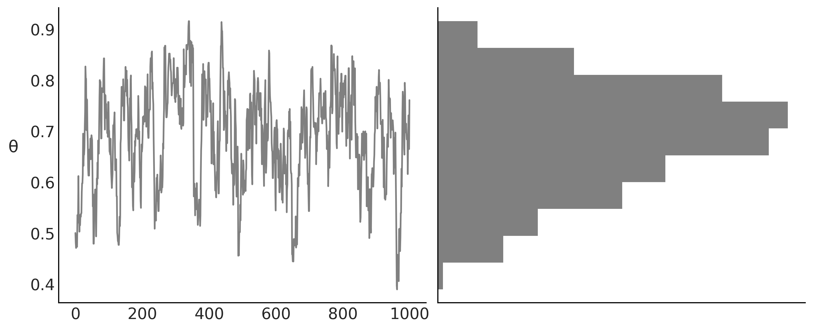
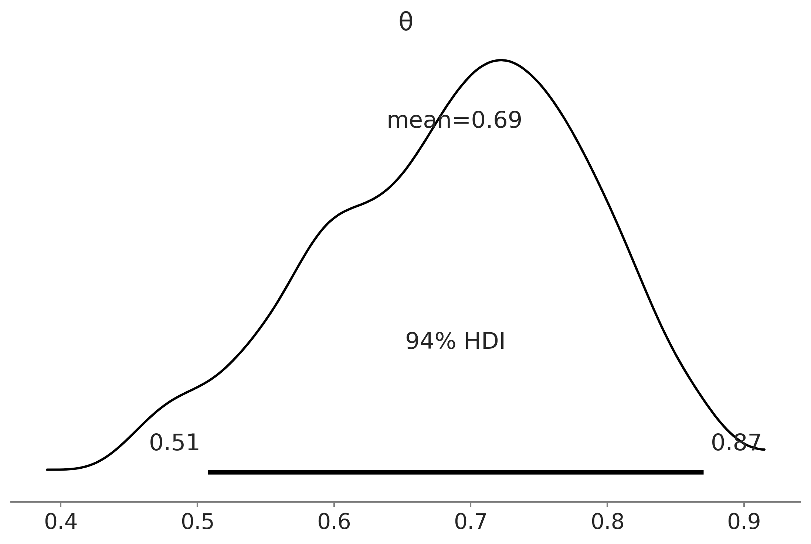
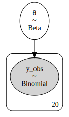
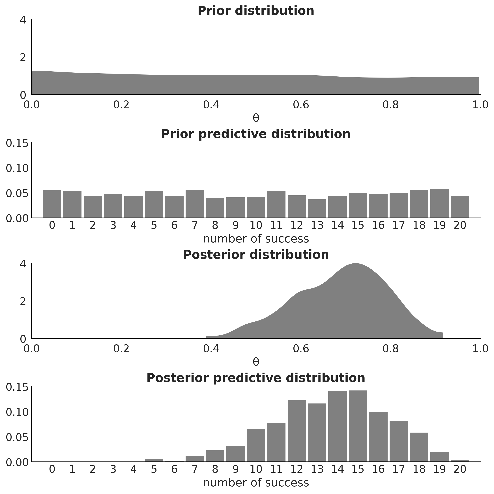
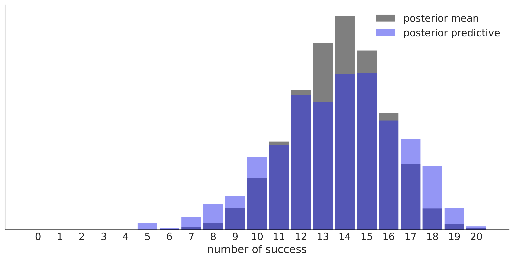
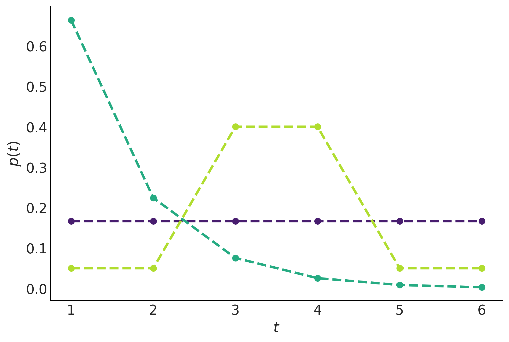
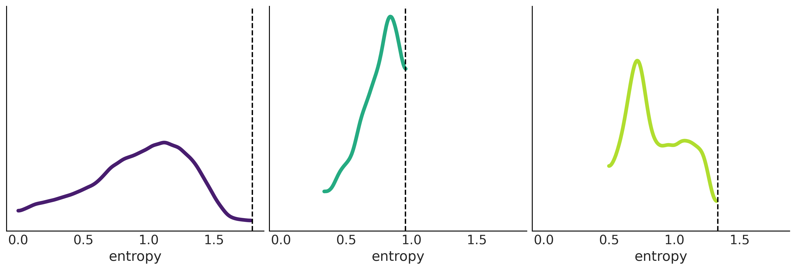
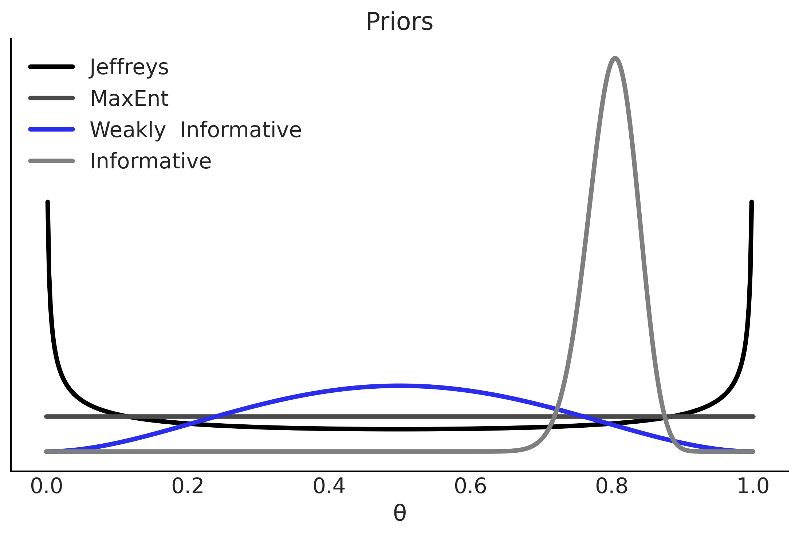

Code 1: Bayesian Inference
Contents
Code 1: Bayesian Inference¶
This is a reference notebook for the book Bayesian Modeling and Computation in Python
The textbook is not needed to use or run this code, though the context and explanation is missing from this notebook.
If you’d like a copy it’s available from the CRC Press or from Amazon. ``
%matplotlib inline
import arviz as az
import matplotlib.pyplot as plt
import numpy as np
import pymc3 as pm
from scipy import stats
from scipy.stats import entropy
from scipy.optimize import minimize
az.style.use("arviz-grayscale")
plt.rcParams['figure.dpi'] = 300
np.random.seed(521)
viridish = [(0.2823529411764706, 0.11372549019607843, 0.43529411764705883, 1.0),
(0.1450980392156863, 0.6705882352941176, 0.5098039215686274, 1.0),
(0.6901960784313725, 0.8666666666666667, 0.1843137254901961, 1.0)]
A DIY Sampler, Do Not Try This at Home¶
Figure 1.1¶
grid = np.linspace(0, 1, 5000)
prior = stats.triang.pdf(grid, 0.5)
likelihood = stats.triang.pdf(0.2, grid)
posterior = prior * likelihood
log_prior = np.log(prior)
log_likelihood = np.log(likelihood)
log_posterior = log_prior + log_likelihood
_, ax = plt.subplots(1, 2, figsize=(10, 4))
ax[0].plot(grid, prior, label="prior", lw=2)
ax[0].plot(grid, likelihood, label="likelihood", lw=2, color="C2")
ax[0].plot(grid, posterior, label="posterior", lw=2, color="C4")
ax[0].set_xlabel("θ")
ax[0].legend()
ax[0].set_yticks([])
ax[1].plot(grid, log_prior, label="log-prior", lw=2)
ax[1].plot(grid, log_likelihood, label="log-likelihood", lw=2, color="C2")
ax[1].plot(grid, log_posterior, label="log-posterior", lw=2, color="C4")
ax[1].set_xlabel("θ")
ax[1].legend()
ax[1].set_yticks([])
plt.savefig("img/chp01/bayesian_triad.png")
/tmp/ipykernel_96659/3124886896.py:5: RuntimeWarning: divide by zero encountered in log
log_prior = np.log(prior)
Code 1.1¶
def post(θ, Y, α=1, β=1):
if 0 <= θ <= 1:
prior = stats.beta(α, β).pdf(θ)
like = stats.bernoulli(θ).pmf(Y).prod()
prop = like * prior
else:
prop = -np.inf
return prop
Code 1.2¶
Y = stats.bernoulli(0.7).rvs(20)
Code 1.3¶
n_iters = 1000
can_sd = 0.05
α = β = 1
θ = 0.5
trace = {'θ':np.zeros(n_iters)}
p2 = post(θ, Y, α, β)
for iter in range(n_iters):
θ_can = stats.norm(θ, can_sd).rvs(1)
p1 = post(θ_can, Y, α, β)
pa = p1 / p2
if pa > stats.uniform(0, 1).rvs(1):
θ = θ_can
p2 = p1
trace['θ'][iter] = θ
Code 1.5¶
az.summary(trace, kind='stats', round_to=2)
| mean | sd | hdi_3% | hdi_97% | |
|---|---|---|---|---|
| θ | 0.69 | 0.1 | 0.51 | 0.87 |
Code 1.4 and Figure 1.2¶
_, axes = plt.subplots(1,2, figsize=(10, 4), constrained_layout=True, sharey=True)
axes[1].hist(trace['θ'], color='0.5', orientation="horizontal", density=True)
axes[1].set_xticks([])
axes[0].plot(trace['θ'], '0.5')
axes[0].set_ylabel('θ', rotation=0, labelpad=15)
plt.savefig("img/chp01/traceplot.png")

Say Yes to Automating Inference, Say No to Automated Model Building¶
Figure 1.3¶
az.plot_posterior(trace)
plt.savefig("img/chp01/plot_posterior.png")

Code 1.6¶
# Declare a model in PyMC3
with pm.Model() as model:
# Specify the prior distribution of unknown parameter
θ = pm.Beta("θ", alpha=1, beta=1)
# Specify the likelihood distribution and condition on the observed data
y_obs = pm.Binomial("y_obs", n=1, p=θ, observed=Y)
# Sample from the posterior distribution
idata = pm.sample(1000, return_inferencedata=True)
Auto-assigning NUTS sampler...
Initializing NUTS using jitter+adapt_diag...
Multiprocess sampling (4 chains in 4 jobs)
NUTS: [θ]
100.00% [8000/8000 00:01<00:00 Sampling 4 chains, 0 divergences]
Sampling 4 chains for 1_000 tune and 1_000 draw iterations (4_000 + 4_000 draws total) took 2 seconds.
Code 1.7¶
graphviz = pm.model_to_graphviz(model)
graphviz

graphviz.graph_attr.update(dpi="300")
graphviz.render("img/chp01/BetaBinomModelGraphViz", format="png")
'img/chp01/BetaBinomModelGraphViz.png'
A Few Options to Quantify Your Prior Information¶
Figure 1.5¶
pred_dists = (pm.sample_prior_predictive(1000, model)["y_obs"],
pm.sample_posterior_predictive(idata, 1000, model)["y_obs"])
/u/32/martino5/unix/anaconda3/envs/pymcv3/lib/python3.9/site-packages/pymc3/sampling.py:1689: UserWarning: samples parameter is smaller than nchains times ndraws, some draws and/or chains may not be represented in the returned posterior predictive sample
warnings.warn(
100.00% [1000/1000 00:00<00:00]
fig, axes = plt.subplots(4, 1, figsize=(9, 9))
for idx, n_d, dist in zip((1, 3), ("Prior", "Posterior"), pred_dists):
az.plot_dist(dist.sum(1), hist_kwargs={"color":"0.5", "bins":range(0, 22)},
ax=axes[idx])
axes[idx].set_title(f"{n_d} predictive distribution",fontweight='bold')
axes[idx].set_xlim(-1, 21)
axes[idx].set_ylim(0, 0.15)
axes[idx].set_xlabel("number of success")
az.plot_dist(θ.distribution.random(size=1000), plot_kwargs={"color":"0.5"},
fill_kwargs={'alpha':1}, ax=axes[0])
axes[0].set_title("Prior distribution", fontweight='bold')
axes[0].set_xlim(0, 1)
axes[0].set_ylim(0, 4)
axes[0].tick_params(axis='both', pad=7)
axes[0].set_xlabel("θ")
az.plot_dist(trace["θ"], plot_kwargs={"color":"0.5"},
fill_kwargs={'alpha':1}, ax=axes[2])
axes[2].set_title("Posterior distribution", fontweight='bold')
axes[2].set_xlim(0, 1)
axes[2].set_ylim(0, 4)
axes[2].tick_params(axis='both', pad=7)
axes[2].set_xlabel("θ")
plt.savefig("img/chp01/Bayesian_quartet_distributions.png")

Figure 1.6¶
predictions = (model.y_obs.distribution.random({"θ":idata.posterior["θ"].mean()}, size=3000),
pred_dists[1])
for d, c, l in zip(predictions, ("C0", "C4"), ("posterior mean", "posterior predictive")):
ax = az.plot_dist(d.sum(1),
label=l,
figsize=(10, 5),
hist_kwargs={"alpha": 0.5, "color":c, "bins":range(0, 22)})
ax.set_yticks([])
ax.set_xlabel("number of success")
plt.savefig("img/chp01/predictions_distributions.png")

Code 1.8 and Figure 1.7¶
_, axes = plt.subplots(2,3, figsize=(12, 6), sharey=True, sharex=True,
constrained_layout=True)
axes = np.ravel(axes)
n_trials = [0, 1, 2, 3, 12, 180]
success = [0, 1, 1, 1, 6, 59]
data = zip(n_trials, success)
beta_params = [(0.5, 0.5), (1, 1), (10, 10)]
θ = np.linspace(0, 1, 1500)
for idx, (N, y) in enumerate(data):
s_n = ('s' if (N > 1) else '')
for jdx, (a_prior, b_prior) in enumerate(beta_params):
p_theta_given_y = stats.beta.pdf(θ, a_prior + y, b_prior + N - y)
axes[idx].plot(θ, p_theta_given_y, lw=4, color=viridish[jdx])
axes[idx].set_yticks([])
axes[idx].set_ylim(0, 12)
axes[idx].plot(np.divide(y, N), 0, color='k', marker='o', ms=12)
axes[idx].set_title(f'{N:4d} trial{s_n} {y:4d} success')
plt.savefig('img/chp01/beta_binomial_update.png')
<ipython-input-16-1fa733e890d1>:19: RuntimeWarning: invalid value encountered in true_divide
axes[idx].plot(np.divide(y, N), 0, color='k', marker='o', ms=12)
<ipython-input-16-1fa733e890d1>:19: RuntimeWarning: invalid value encountered in true_divide
axes[idx].plot(np.divide(y, N), 0, color='k', marker='o', ms=12)
<ipython-input-16-1fa733e890d1>:19: RuntimeWarning: invalid value encountered in true_divide
axes[idx].plot(np.divide(y, N), 0, color='k', marker='o', ms=12)
Figure 1.8¶
θ = np.linspace(0, 1, 100)
κ = (θ / (1-θ))
y = 2
n = 7
_, axes = plt.subplots(2, 2, figsize=(10, 5),
sharex='col', sharey='row', constrained_layout=False)
axes[0, 0].set_title("Jeffreys' prior for Alice")
axes[0, 0].plot(θ, θ**(-0.5) * (1-θ)**(-0.5))
axes[1, 0].set_title("Jeffreys' posterior for Alice")
axes[1, 0].plot(θ, θ**(y-0.5) * (1-θ)**(n-y-0.5))
axes[1, 0].set_xlabel("θ")
axes[0, 1].set_title("Jeffreys' prior for Bob")
axes[0, 1].plot(κ, κ**(-0.5) * (1 + κ)**(-1))
axes[1, 1].set_title("Jeffreys' posterior for Bob")
axes[1, 1].plot(κ, κ**(y-0.5) * (1 + κ)**(-n-1))
axes[1, 1].set_xlim(-0.5, 10)
axes[1, 1].set_xlabel("κ")
axes[1, 1].text(-4.0, 0.030, size=18, s=r'$p(\theta \mid Y) \, \frac{d\theta}{d\kappa}$')
axes[1, 1].annotate("", xy=(-0.5, 0.025), xytext=(-4.5, 0.025),
arrowprops=dict(facecolor='black', shrink=0.05))
axes[1, 1].text(-4.0, 0.007, size=18, s= r'$p(\kappa \mid Y) \, \frac{d\kappa}{d\theta}$')
axes[1, 1].annotate("", xy=(-4.5, 0.015), xytext=(-0.5, 0.015),
arrowprops=dict(facecolor='black', shrink=0.05),
annotation_clip=False)
plt.subplots_adjust(wspace=0.4, hspace=0.4)
plt.tight_layout()
plt.savefig("img/chp01/Jeffrey_priors.png")
<ipython-input-17-f68b70fc5e9a>:2: RuntimeWarning: divide by zero encountered in true_divide
κ = (θ / (1-θ))
<ipython-input-17-f68b70fc5e9a>:10: RuntimeWarning: divide by zero encountered in power
axes[0, 0].plot(θ, θ**(-0.5) * (1-θ)**(-0.5))
<ipython-input-17-f68b70fc5e9a>:15: RuntimeWarning: divide by zero encountered in power
axes[0, 1].plot(κ, κ**(-0.5) * (1 + κ)**(-1))
<ipython-input-17-f68b70fc5e9a>:17: RuntimeWarning: invalid value encountered in multiply
axes[1, 1].plot(κ, κ**(y-0.5) * (1 + κ)**(-n-1))

Figure 1.9¶
cons = [[{"type": "eq", "fun": lambda x: np.sum(x) - 1}],
[{"type": "eq", "fun": lambda x: np.sum(x) - 1},
{"type": "eq", "fun": lambda x: 1.5 - np.sum(x * np.arange(1, 7))}],
[{"type": "eq", "fun": lambda x: np.sum(x) - 1},
{"type": "eq", "fun": lambda x: np.sum(x[[2, 3]]) - 0.8}]]
max_ent = []
for i, c in enumerate(cons):
val = minimize(lambda x: -entropy(x), x0=[1/6]*6, bounds=[(0., 1.)] * 6,
constraints=c)['x']
max_ent.append(entropy(val))
plt.plot(np.arange(1, 7), val, 'o--', color=viridish[i], lw=2.5)
plt.xlabel("$t$")
plt.ylabel("$p(t)$")
plt.savefig("img/chp01/max_entropy.png")

Code 1.10¶
ite = 100_000
entropies = np.zeros((3, ite))
for idx in range(ite):
rnds = np.zeros(6)
total = 0
x_ = np.random.choice(np.arange(1, 7), size=6, replace=False)
for i in x_[:-1]:
rnd = np.random.uniform(0, 1-total)
rnds[i-1] = rnd
total = rnds.sum()
rnds[-1] = 1 - rnds[:-1].sum()
H = entropy(rnds)
entropies[0, idx] = H
if abs(1.5 - np.sum(rnds * x_)) < 0.01:
entropies[1, idx] = H
prob_34 = sum(rnds[np.argwhere((x_ == 3) | (x_ == 4)).ravel()])
if abs(0.8 - prob_34) < 0.01:
entropies[2, idx] = H
Figure 1.10¶
_, ax = plt.subplots(1, 3, figsize=(12,4), sharex=True, sharey=True, constrained_layout=True)
for i in range(3):
az.plot_kde(entropies[i][np.nonzero(entropies[i])], ax=ax[i], plot_kwargs={"color":viridish[i], "lw":4})
ax[i].axvline(max_ent[i], 0, 1, ls="--")
ax[i].set_yticks([])
ax[i].set_xlabel("entropy")
plt.savefig("img/chp01/max_entropy_vs_random_dist.png")

Figure 1.11¶
x = np.linspace(0, 1, 500)
params = [(0.5, 0.5), (1, 1), (3,3), (100, 25)]
labels = ["Jeffreys", "MaxEnt", "Weakly Informative",
"Informative"]
_, ax = plt.subplots()
for (α, β), label, c in zip(params, labels, (0, 1, 4, 2)):
pdf = stats.beta.pdf(x, α, β)
ax.plot(x, pdf, label=f"{label}", c=f"C{c}", lw=3)
ax.set(yticks=[], xlabel="θ", title="Priors")
ax.legend()
plt.savefig("img/chp01/prior_informativeness_spectrum.png")
